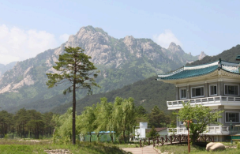

Pronóstico del tiempo para las próximas 24 horas: Mucho sol Viento: 7km/h; Temp: 21°C; Humedad: 82%
GRP.F NEWPOST
GIRONA - MARTES 2, JUNIO 2025 - MENU DE MINIJUEGOS
Supervivencia gasatronomica
by Grupo F GDDV
Foto tomada en el nivel 1.
La demo del juego nos introduce en un tenso nivel 1, ambientado en un restaurante tradicional de Corea del Norte, lleno de oficiales y personajes de alto rango del gobierno. Como jugador, tu objetivo es pasar desapercibido en este entorno cargado de expectativas y riesgos. Para lograrlo, deberás tomar decisiones críticas, como elegir el plato correcto del bufet, pero eso no es todo. En el camino, varios personajes harán preguntas de cultura sobre Corea del Norte, y tus respuestas definirán si te ganan puntos adicionales o te ponen en la mira de los demás comensales. Elegir un plato tradicional te otorga una mayor puntuación, pero tus elecciones y respuestas influirán directamente en tu desempeño. La presión aumenta con cada movimiento, ya que un error podría poner en peligro tu misión.
Viaje a Kumgang
by Grupo F GDDV

Foto tomada en el nivel 2.
La familia continúa su viaje hacia el monte Kumgang, donde su misión es alcanzar la mayor altitud posible para lograr una alta puntuación. Durante el ascenso, se encontrarán con señales en el idioma local que deberán seguir para llegar al destino final: las impresionantes cataratas Kowloon. A lo largo del recorrido, el jugador deberá capturar imágenes de los paisajes y lugares que vayan encontrando, sumando puntos por cada fotografía tomada. El desafío radica en combinar el esfuerzo por llegar lo más alto posible con la observación atenta de la ruta para no perderse ninguna oportunidad fotográfica en el camino.
git
Calles de Pyongyang
by Grupo F GDDV
Foto tomada en el nivel 3.
En este mini-juego, el jugador acompaña a una familia que recorre las calles de la capital, mientras debe seguir el itinerario marcado por el guía sin llamar la atención. El reto principal es mantenerse en el curso correcto, evitando ser detectados si se desvían del recorrido. A lo largo del camino, la familia debe capturar fotos no solo de los sitios más turísticos, sino también de los lugares menos conocidos que hacen única a la ciudad. Al final, las cinco fotos que reciban la mayor puntuación serán las seleccionadas, y su total determinará la puntuación final del mini-juego, poniendo a prueba la habilidad de observar y explorar de manera discreta y estratégica.
Kim Il Sung Stadium
by Grupo F GDDV
Foto tomada en el nivel 4.
Durante su estancia en el país, la familia asiste a un partido de fútbol entre Corea del Norte y Corea del Sur, donde se mezcla con la multitud en la grada local. Tratados como un aficionado más, su misión es vivir la experiencia del evento sin destacar, mientras disfrutan de la tensión que se respira en el estadio. A lo largo del partido, el jugador debe mantenerse atento a las interacciones con otros aficionados, todo mientras se sumerge en la emoción del juego y la cultura deportiva local.
Grand People 's Study House
by Grupo F GDDV
Foto tomada en el nivel 5.
La última parada de la familia la lleva a la librería más grande del país, un vasto escenario lleno de rincones secretos y estanterías interminables. El objetivo principal es capturar las fotos más impresionantes desde su interior, pero para lograrlo deberán aventurarse en áreas inaccesibles, sorteando obstáculos y evitando llamar la atención. La familia debe explorar con sigilo y creatividad, buscando los ángulos más únicos y las tomas más memorables, todo mientras se adentran en la complejidad de este laberinto literario.